Arquivo fonte: /Volumes/Macintosh_HD/Users/fernandopassold/Documents/UPF/Controle_Auto_3/Derivador/Controle_Acao_Derivativa.md (24/04/2018)
Seja: \(y(t)=\dfrac{du(t)}{dt}\), sua aproximação numérica pode ser realizada simplesmente como:
\(
y(t)=\dfrac{du(t)}{dt} \cong \dfrac{u[k]-u[k-1]}{\Delta t}
\)
no nosso caso, \(\Delta t=T\) (período de amostragem).
A equação acima leva à:
\(
Y(z)=\dfrac{U(z)-z^{-1} \cdot U(z)}{T} \cdot \dfrac{z^1}{z^1} = \dfrac{U(z)(\cdot z -1)}{T \cdot z}
\)
ou:
\(
\dfrac{Y(z)}{U(z)} = \dfrac{1}{T} \cdot \dfrac{(z-1)}{z}
\)
que rende: zero em \(z=1\) (e um pólo na origem em \(z=0\)).
Note que o Derivador Puro possui alguma similaridade com o controlador por avanço de fase :
| No plano-s: | No plano-z: |
|---|---|
| 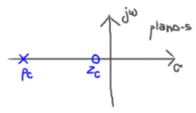 | 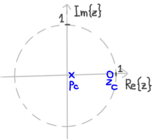 |
O problema é que um ação derivativa pura leva à:
\(
D(s)=s
\)
que resulta no seguinte diagrama de Bode:
>> bode([1 0], 1)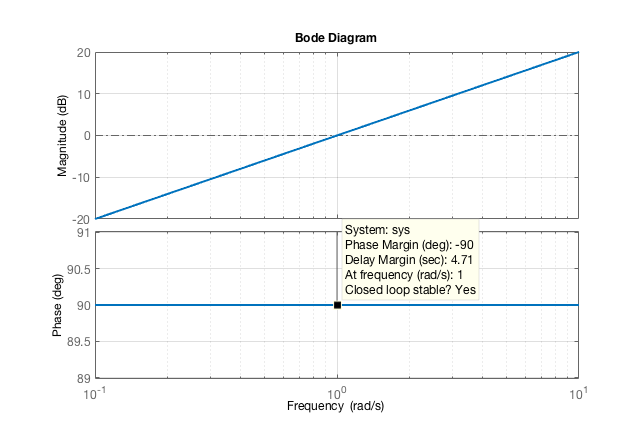
Ou seja, repare que o ganho só aumenta (e tende à \(\infty\)) à medidade que a frequência aumenta (ou seja, onde está o ruído). Note também que esta última função transferência é irealizável.
Na prática, um circuito derivador puro se poderia tentar realizar através do seguinte circuito usando amplificador operacional:
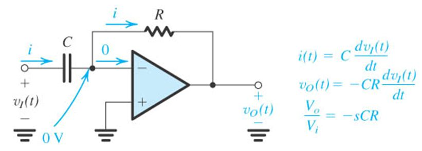
Fonte: The op-amp Differentiator - ppt video online download, Operational amplifier applications - WikiVisually
Em frequencias baixas a impedância do capacitor é praticametne \(\infty\) e então o ganho é mínimo (\(-\infty\)). Mas à medida que a frequencia aumenta, \(X_c \approx 0\) e então o ganho tende à \(+\infty\) e neste caso o amp.op. não funciona mais porque atura e entra em oscilação.
Já um circuito realizável seria algo como:
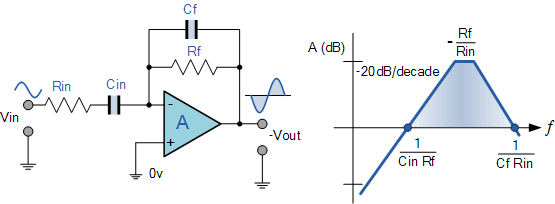
Suponha que o seguinte sinal está sendo amostrado:
\(
x(t) = \underbrace{1 \cdot \sin (2 \pi \; 1 \; t)}_{\text{Sinal esperado (1 Hz)}} + \underbrace{ \frac{1}{100} \cdot \sin (2 \pi \; 60 \; t) }_{ \text{Ruído sobreposto} }
\)
Note na eq. anteriror que o ruído ocorre na frequência da rede elétrica e corresponde à apenas 1% da amplitude do sinal esperado -- o que significa que a princípio ele é praticamente negligenciável (imperceptível) -- veja gráfico à seguir:
>> ezplot( 'sin(2*pi*t)+(1/100)*sin(2*pi*100*t)',[0 2] ) % 2 ciclos do sinal esperado
>> grid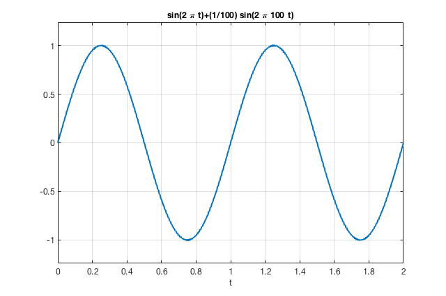
Um "zoom" sobre o sinal anterior permite visualizar o erro:
>> ezplot( 'sin(2*pi*t)+(1/100)*sin(2*pi*100*t)',[0.2 0.4] ) % zoom sobre o sinal anterior
>> grid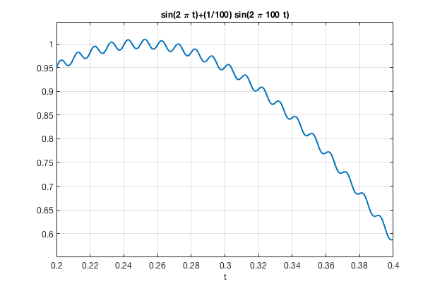
Note porém que derivada deste sinal rende:
\(
y(t)=\dfrac{\text{d}x(t)}{\text{d}t} = \cos(2\pi \;t) + \underbrace{ \dfrac{1}{100} \cdot 60 \cdot \cos (2\pi \; 60 \; t) }_{\text{Derivada do Ruído}}
\)
Note agora que a amplitude do sinal derivado, amplificou (ressaltou) o ruído presente no sinal. A amplitudade do ruído que antes estava na faixa de 0,01 Vp agora passou para 0,6 Vp (ou seja, aumentou \(60 \times\)).
Um gráfico do sinal deraivado \(y(t)\) rende:
>> ezplot( 'cos(2*pi*t)+(60/100)*cos(2*pi*100*t)',[0 2] )
>> grid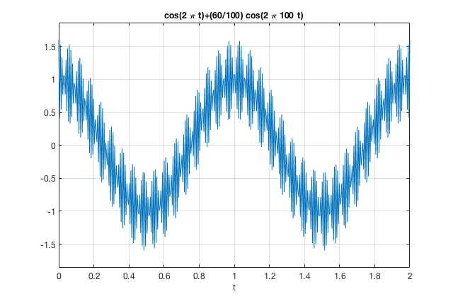
Um "zoom" sobre a figura anterior permite "contemplar" melhor o efeito da derivada sobre um sinal ruidoso:
>> t=0.4:0.001:0.6; % zoom sobre a parte interessada
>> x=sin(2*pi.*t)+(1/100)*sin(2*pi*100.*t); % sinal + ruido
>> y=cos(2*pi.*t)+(60/100)*cos(2*pi*100.*t); % derivada do sinal com ruido
>> y2=cos(2*pi.*t); % derivada apenas do sinal esperado
>> figure;
>> plot(t,y,'b-', t,y2,'m--')
>> legend('d\dt Sinal com ruído', 'd/dt Sinal sem ruído')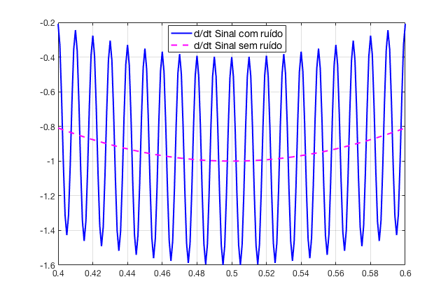
Conforme esperado, o próprio diagrama de Bode um um derivador puro indica que a amplitude de sinais de alta frequência será elevada proporcionalmente à sua frequência.
Mesmo usando um algoritmo digital para implementar a derivada, resulta em:
\(
y[k] \approx K_d \cdot \dfrac{x[k]-x[k-1]}{T}
\)
onde \(K_d\) corresponderia ao ganho derivativo.
Simulando sobre o sinal anterior, resulta em:
T=8E-4; % período de amostragem - Note que 1/(20*60) = 0.0008333
t=0:T:1; % zoom sobre a parte interessada
x=sin(2*pi.*t)+(1/100)*sin(2*pi*100.*t); % sinal + ruido
y=cos(2*pi.*t)+(60/100)*cos(2*pi*100.*t); % derivada do sinal com ruido
y2=cos(2*pi.*t); % derivada apenas do sinal esperado
% Simulando uma derivada numerica no vetor y3
u=length(t); % retorna qtdade de pontos do vetor t (amostras)
y3=zeros(1,u); % inicializando vetor da derivada numerica
for i = 2:u
y3(i) = ( x(i) - x(i-1) ) / T;
end
figure;
plot(t,y,'b-', t,y2,'m--', t,y3,'go-')
legend('d\dt Sinal com ruído', 'd/dt Sinal sem ruído',...
'Derivada Numerica')
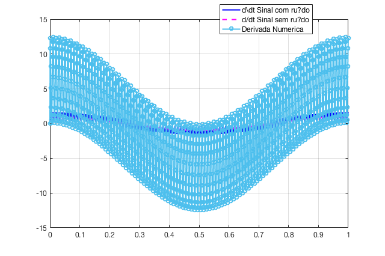
Um "zoom" sobre a figura anterior rende:
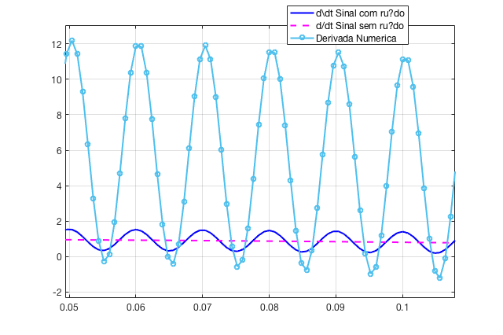
O resultado está londe do esperado. E piora se considerarmos que sobre o resutlado do gráfico falta aplicar o ganho Derivativo \(\mathbf{K_d}\).Note a baixa precisão nesta aproximação numérica para uma derivada.
Solução: ?
Notamos que não é interessante derivar a parte de frequencias elevadas (ruído) de um sinal. Então a solução é aplicar um Filtro Passa Baixas, antes de derivar o sinal desejado.
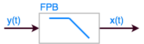
A equação diferencial de um filtro passa-baixas (FPB) de 1a-ordem é dada por:
\(
\tau_F \cdot \dfrac{\text{d}y(t)}{\text{d}t} + y(t) = x(t)
\)
onde \(\tau_F\) corresponde à constante de tempo do filtro. Então:
\(
f_c = \dfrac{1}{2\pi \; \tau_F} \quad \text{(Hz)}
\)
Para \(\tau_F < 3\) segundos, o filtro pode ser passivo, constituído por um simples circuito RC.
Na prática sugere-se \(\tau_F < 0,1 \cdot \tau_{\text{máx}}\) (ou seja, com frequencia de corte uma década abaixo); \(\tau_\text{máx}\) corresponde à constante de tempo dominante (maior) do sistema.
Note que o emprego de FPB numa malha de controle, inevitavelmente implica na introdução de um significativo atraso dinâmico (no tempo).
A função transferência do filtro seria:
\(
G(j\omega) = \dfrac{1}{\tau_F \; j \omega + 1}
\)
ou como \(s=j\omega\):
\(
G(s)=\dfrac{1}{\tau_F \; s + 1}
\)
A amplitude fica caracterizada por:
\(
|G(j\omega)|=\sqrt{ \left( \frac{1}{\omega^2 \; \tau_F^2 +1} \right)^2 + \left( \frac{-\omega \; \tau_F}{\omega^2 \; \tau_F^2+1}\right)^2}
\)
\(
|G(j\omega)|=\sqrt{ \frac{( 1+\omega^2\; \tau_F^2)}{(\omega^2 \; \tau_F^2+1 )} }
\)
\(
|G(j\omega)|=\dfrac{1}{ \sqrt{\omega^2 \; \tau_F^2 + 1} }
\)
e a fase é caracterizada por:
\(
\phi=\angle{G(j\omega)}=\tan^{-1}{(-\omega \; \tau_F)} = - \tan^{-1}{(\omega \; \tau_F)}
\)
Se \(\tau_F=1,0\) (segundo), então: \(\omega_F = 1 / \tau_F = 1,0\) (rad/s). A função transferência deste filtro ficaria como:
\(
G(s)=\dfrac{1}{s+1}
\)
O que rende os seguintes diagramas de Bode:
>> figure; bode(1, [1 1]); grid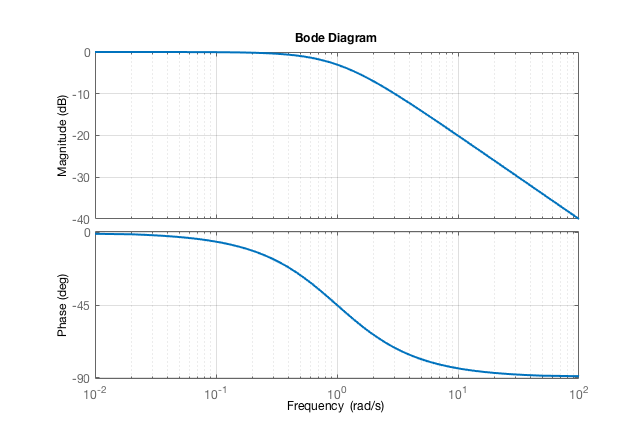
Por exemplo:
>> 20*log10(0.1)
ans =
-20
>> Um simples filtro passa-baixas RC é mostrado na próxima figura:
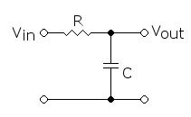
Para este circuito:
\(
f_c = \dfrac{1}{2\pi \; R \; C}
\)
A frequência do filtro deveria esta na faixa: \(\omega_{\text{máx}} < \omega_F < \omega_N\); onde: \(\omega_F=1 / \tau_F\), \(\omega_{\text{máx}}=1/\tau_{\text{máx}}\) e onde \(\tau_{\text{máx}}\) corresponde a mair constante de tempo (a dominante) do processo e \(\omega_N\) corresponde à frequência do ruído (rad/s). É esperado que \(\omega_F < \omega_N\).
Seja um filtro do tipo:
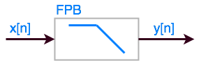
Uma derivada numérica simples se consegue através de:
\(
\dfrac{\text{d}y(t)}{\text{d}t} \approx \dfrac{y[n]-y[n-1]}{\Delta t}
\)
Note que se aproxima da equação do filtro analógico de 1a-ordem:
\(
\tau_F \cdot \dfrac{\text{d}y(t)}{\text{d}t} + y(t) = x(t)
\)
que resultaria neste caso em:
\(
\tau_F \cdot \dfrac{(y[n]-y[n-1])}{\Delta t} + y[n] = x[n]
\)
trabalhando a equação anterior à fim de isolar \(y[n]\) (FPB sobre o sinal \(x[k]\)), teremos:
\(
\begin{array}{rcl}
\dfrac{\tau_F \; y[n]}{\Delta t} - \dfrac{\tau_F \; y[n-1]}{\Delta t} + y[n] & = & x[n] \\
& & \\
y[n] \left( 1+\dfrac{\tau_F}{\Delta t} \right) &=& x[n] + \dfrac{\tau_F \; y[n-1]}{\Delta t} \\
& & \\
y[n] & = & \dfrac{ \dfrac{x[n]}{1} }{ 1 + \dfrac{\tau_f}{\Delta t} } + \dfrac{ \dfrac{\tau_F \; y[n-1]}{\Delta t} }{ 1 + \dfrac{\tau_F}{\Delta t} }\\
& & \\
y[n] & = & \dfrac{ \dfrac{x[n]}{1} }{ 1 + \dfrac{\Delta t + \tau_F}{\Delta t} } + \dfrac{ \dfrac{\tau_F \; y[n-1]}{\Delta t} }{ \dfrac{\Delta t + \tau_F}{\Delta t}} \\
& & \\
y[n] & = & \left( \dfrac{\Delta t}{\tau_F + \Delta t} \right) \cdot x[n] + \left( \dfrac{\tau_F}{\tau_F + \Delta t} \right) \cdot y[n-1] \\
\end{array}
\)
Podemos criar a variável \(\alpha\) tal que:
\(
\alpha = \dfrac{1}{ \dfrac{\tau_F}{\Delta t} + 1}
\)
e então:
\(
(1-\alpha) = 1 - \dfrac{1}{ \dfrac{\tau_F}{\Delta t} + 1 } = \dfrac{\tau_F}{\tau_F + \Delta t}
\)
e assim chegamos a um formato mais simples de equação para o filtro digital exponencial de 1a-ordem:
\(
y[n] = \alpha \; x[n] + (1 - \alpha) \; y[n-1]
\)
onde: \(0 < \alpha < 1\). Tipicamente é empregado o valor \(\alpha = 0,1\).
| Note que: | ||
|---|---|---|
| Se \(\alpha = 1\) | \(\rightarrow\) não existe filtragem | \(\rightarrow \quad y[n] = x[n]\). |
| Se \(\alpha = 0\) | \(\rightarrow\) Sinal original é ignorado | \(\rightarrow \quad y[n] = 0\). |
Pode ser formado pelo cascateamento de 2 filtros de 1a-ordem:
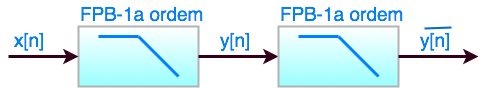
Derivando as equações, teremos:
\(
\begin{array}{rcl}
\bar{y}[n] & = & \gamma \; y[n] + (1 - \gamma) \; \bar{y}[n-1] \\
& & \\
\bar{y}[n] & = & \gamma \; \alpha \; x[n] + \gamma (1 - \alpha) y[n-1] + (1 - \gamma) \; \bar{y}[n-1] \\
& & \\
\bar{y}[n-1] & = & \gamma \; y[n-1] + (1 - \gamma) \; y[n-2] \\
& & \\
y[n-1] & = & \dfrac{1}{\gamma} \; \bar{y}[n-1] - \dfrac{(1 - \gamma)}{\gamma} \; \bar{y}[n-2]\\
& & \\
\bar{y}[n] & = & \gamma \; \alpha \; x[n] + (2 - \gamma - \alpha) \; \bar{y}[n-1] - (1-\alpha)(1-\gamma)\; \bar{y}[n-2]
\end{array}
\)
Se \(\gamma = \alpha\), este filtro resulta em:
\(
\bar{y}[n] = \alpha^2 \; x[n] + 2(1-\alpha)\; \bar{y}[n-1] - (1-\alpha)^2 \; \bar{y}[n-2]
\)
Note que existe uma vantagem deste filtro sobre o anterior de 1a-ordem: este filtro atenua mais fortemente ruídos de alta frequencia, especialmetne se \(\gamma = \alpha\).
Este filtro resulta em algo semelhante à:
\(
G(s) = \dfrac{1}{(s+1)^2}
\)
Cujo diagrama de Bode resulta:
>> figure; bode(1, conv( [1 1], [1 1] ) ); gridNote: corte de 40 db/déc!
>> 20*log10(0.01/1)
ans =
-40
Neste caso se aplica simplesmente a equação:
\(
y[n] = \dfrac{1}{J} \; \sum_{i=n-J+1}^{n}{x[i]}
\)
que representa a média dos últimos \(J\) pontos soobre o sinal de entrada \(x[n]\)
Esta equação pode ser reescrita como:
\(
y[n-1] = \dfrac{1}{J} \; \sum_{i=n-J}^{n-1}{}x[i]
\)
mesclando as 2 últimas equações obtemos:
\(
y[n] = y[n-1] + \dfrac{1}{J} \; \left( x[n] - x[n-J] \right)
\)
que resulta num comportamento semelhante à um filtro passa-baixas, servindo também para eliminar componentes (ruídos) de alto frequência.
Os 3 filtros anteriores poderiam ser aplicados sobre este tipo de sinal:
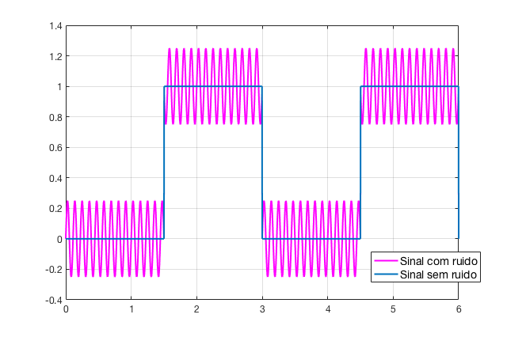
Script adotado no MATLAB para gerar figura anterior:
% Problema sugerido - controladores ação derivativa
% Fernando Passold, 24/04/2018
T1=1/(0.05*60) % 1o-periodo de amostragem
T2=1/(0.1*60) % 2o-periodo de amostragem
% Simulando os primeiros 2 ciclos de uma onda
% quadrada, f = 1/3 (Hz)
% amostrar este sinal 20 x f
disp('Onda quadrada oscilando à:')
f = 1/3
fs = 20*20;
T_square = 1/f;
T = 1/fs;
k=0:T:2*T_square;
u=length(k); % qtadade de amostras geradas
square=zeros(1, u);
for i=1:u
t = k( i ); % calculando tempo real em segundos
if ( t > T_square/2 )&&( t < T_square)
square(1, i) = 1;
end
if ( t > (T_square + T_square/2) )&&( t < 2*T_square)
square(1, i) = 1;
end
end
% Sobrepondo a senoide (ruido) de 0,25 Vp, freq = 9 Hz
f_N = 9;
T_N = 1/f_N;
for i=1:u
t = k( i );
noise( i ) = 0.25*sin(2*pi*f_N*t);
signal( i ) = square( i ) + noise( i );
end
plot(k, signal,'m-', k, square)
legend('Sinal com ruido','Sinal sem ruido')
grid| Documento gerado usando metalinguagem markdown usando editor BoostNote, free, multiplataforma (Windwos, Mac, Linux, iOS, Android). |
|---|
O que é MarkDown? Boost your productivity using Markdown. – Hacker Noon
"Cheat Sheet" desta linguagem clicle aqui: Cheat Sheet | Markdown Guide.
Esta linguagem permite criar rapidamente documentos texto que podem ser salvos como arquivos .txt ou .md ou .html e permite incluir rapidamente e com facilidade, equações, figuras e partes de código.
Para a edição das equações entre novatos do \(\LaTeX\) se recomendam os seguintes editores on-line:
* Online LaTeX Equation Editor - LaTeX4technics
* Online Latex Equation Editor - Sciweavers
* Editor Online de Equações LaTeX - crie, integre e baixe
* EqualX - LaTeX Equation Editor
Para "descobrir" o código para caracteres especiais ou caracteres gregos no padrão \(\LaTeX\) existe a ferramenta on-line: Detexify LaTeX handwritten symbol recognition , que é capaz de reconhecer o desenho do caracter desejado e convertê-lo para o correspondente código \(\LaTeX\).
Para editar tabelas no formato \(\LaTeX\) podem ser usadas as ferramentas on-line:
* LaTeX Tables Editor
* Create LaTeX tables online
* Table Editor - BETA (Este parece ser mais interessante para converter uma tabela entre HTML <--> LaTeX <--> Comma Separated Values <--> Markdown <--> reStructuredText <--> SQL)
Desenhos criados usando software:
| Flowchart Maker & Online Diagram Software do Google -- ferramenta on-line. | |
|---|---|
| Free Software for Students & Educators | SketchBook | Autodesk. Versão educacional (livre) --> Você deve se registrar usando sua conta de email da UPF! |
Arquivo fonte: /Volumes/Macintosh_HD/Users/fernandopassold/Documents/UPF/Controle_Auto_3/Derivador/Controle_Acao_Derivativa.md (Abril/2018)